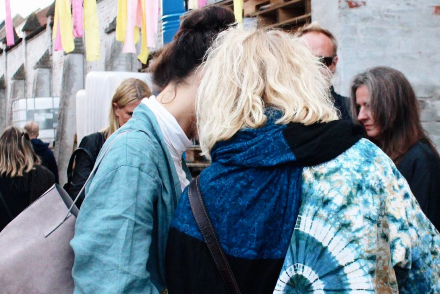
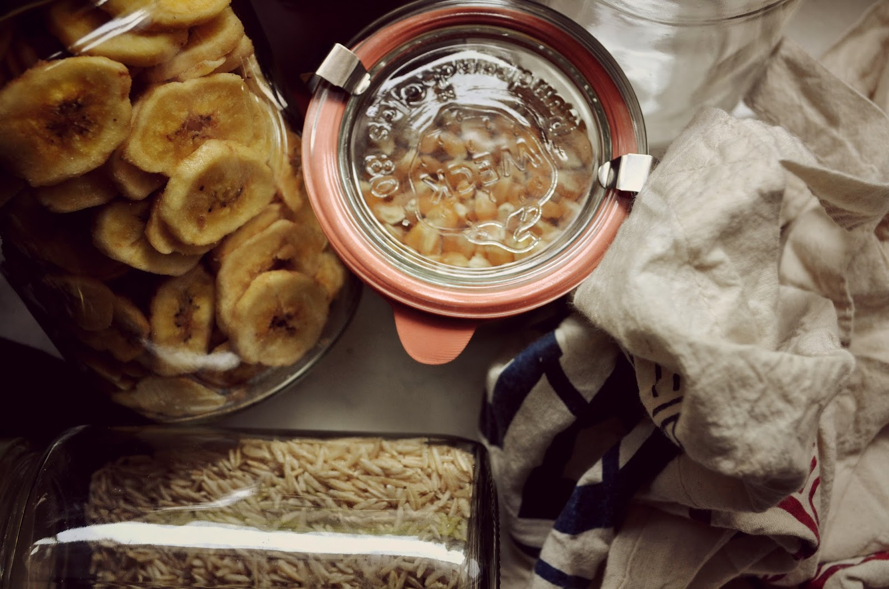

Relax
 By Florine Hofmann, October, 2017
By Florine Hofmann, October, 2017
Yes, yes, yes our schedules are full, our social calenders even fuller but sometimes it is important to turn out attention inward and take care of our well being.
By taking care of ourselves in a wholesome way, we apply preventative measures that keep our bodies and minds from going on strike when it is most inconvenient.
Here are our top 15 tips for wholesome indulgences that feed the mind, the body and the soul.
CONTINUE READING...
Tips

By Florine Hofmann October, 2017
We want it all!
As students, want to get good grades at uni without having to compromise on our partying endeavours, we want to eat gourmet without breaking the bank and we want to be sustainable without the effort.
Well luckily the grid dug deep for you this week, to solve these solitions with one answer: sustainability.
When in doubt of how to approach a new area of sustainability, we find it best to apply Bea Johnsons 5 Rs in order(leaving out the Rot), which make the process of change a little easier and organized.
CONTINUE READING...
Life Hacks

By Florine Hofmann October, 2017
As students we have usually don't want to spend much time on the thought of what to buy when, where and how.
Eating healthy and nutricious meals while being cost efficient requires some preparation in order for it to become a convenient routine.
We have created list of essential shopping tools and a list of things to buy in the beginning of the month in order to prevent unhealthy eating habits at the end of the month. We present to you:
The Ultimate Shopping Guide for Students
CONTINUE READING...
Recipe
 By Florine Hofmann October 02, 2017
By Florine Hofmann October 02, 2017
When it comes to food, many students justify their unhealthy eating habits with the lack of money and time.
We here at "The Grid " fully understand your concern and have therefore created a recipe that will leave you full, satisfied and fueled up without burning a hole into your wallet.
Risotto convex is incredibly easy to make. Brown rice is a complex carbohydrate that will leave you full longer and with the protein-rich chickpeas, beans and spinach you'll be ready to tackle your next studying project with ease.
This recipe is vegan friendly, because we think that sharing is caring, enjoy.
CONTINUE READING...